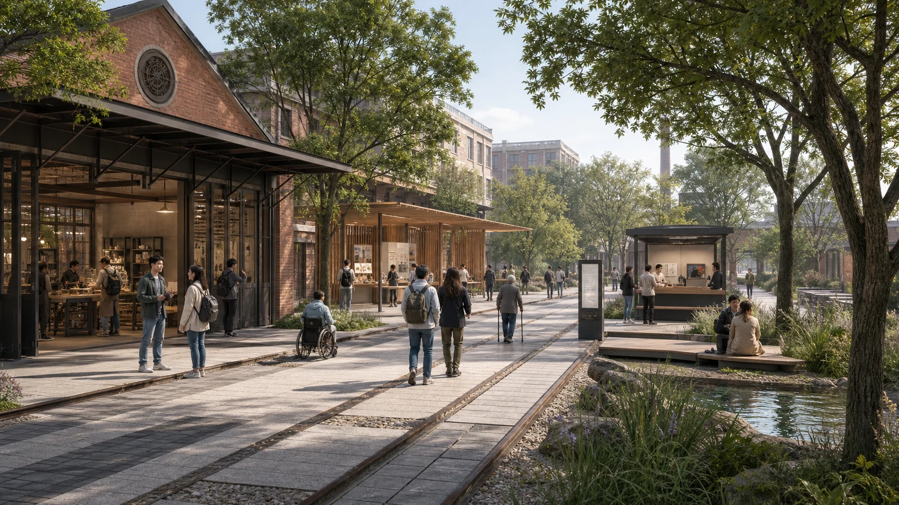

Coordinated Research Area
Studies industry, service and governance coordination without deriving precise alignments from provisional geometry.
Every pilot leaves a public receipt.
Provisional computation frame · Content-review candidate · Not an official plan
This is not another technology-showcase loop. It is an auditable compact that embeds public-resource use, human authority, maintenance responsibility and public return into space.

Studies industry, service and governance coordination without deriving precise alignments from provisional geometry.
Uses replaceable concept zoning, accountability space and conditional gates to express renewal methods.
Three stewardship stations test supervised proof, public assembly and reversible everyday service.


Space-time access, data-compute-energy, maintenance-repair and public return.
A multi-party assembly discloses conflicts, appeals, reviews and stop recommendations.
Every pilot keeps a versioned public receipt recording success, failure and exit.


This AI-generated image explains relationships among accessibility, human service, heritage traces and blue-green space. It is not a site observation, public opinion or approved construction.
Building geometry represents spatial typologies. Without verified existing-condition, ownership and regulatory data, it makes no parcel-level retain-renovate-demolish, scale or height conclusion.
Complete data, heritage and accessibility checks; begin with removable interventions.
Test services and public assembly in suitable, authorized spaces.
After professional assessment, undertake adaptive renewal and controlled validation.
Consider normalization only when public-return, operational and professional evidence is adequate.
Model release gate, slow coexistence lane, multi-agent city simulation room and reversible AI storefront. Each passes scope and consent, controlled trial, public receipt, and scale-or-exit gates.
Older neighbor, mobility- or sensory-diverse commuter, student/open-source developer, international product lead, local business operator, and city/community steward.

The compliance matrix maps all 23 announcement and agent.1-agent.6 requirements to sections, geometry, metrics, drawings, visuals, sources, assumptions and checks.
This page does not self-declare approval. The authoritative contributor record is self_check.json, subject to trusted CI or maintainer rerun.
Primary evidence includes the official announcement, cleared agent taskbook, local snapshots of urban-design/regulatory/land-use standards, and six official international case pages. Full use and rights boundaries are recorded in sources.json.